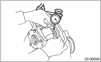
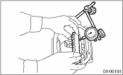
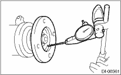

Wash all the disassembled parts clean, and examine them for wear, damage and other defects. Repair or replace the defective parts as necessary.
1. Hypoid driven gear and drive pinion
• If there is evidently an abnormal tooth contact, find out the cause and adjust until the teeth contact correctly. Replace the gear if there is an excessive worn or an incapable adjustment.
• If crack, cutout or seizure is found, replace the parts as a set. Slight damage of some teeth can be corrected by oil stone or the like.
2. Bearing
Replace if seizure, peeling, wear, rust, dragging during rotation, noise or other defect is evident.
3. Oil seal
Replace if deformed or damaged, and at every disassembling.
4. Differential carrier
Replace if the bearing bores are worn or damaged.
5. Differential case
Replace if its sliding surfaces are worn or cracked.
6. Companion flange
Replace if the oil seal lip contact surface shows cracking.
7. Rear differential gear oil temperature switch (Turbo model for Europe)
If the following inspection detects a defect, replace the rear differential temperature switch.
(1) Inspect continuity between compartment temperature sensor terminal and vehicle body.
(2) Immerse the sensor in oil and raise the oil temperature. Check that continuity disappears at an oil temperature of 144°C — 156°C (291°F — 313°F) and that continuity recovers when the oil temperature lowers to 135°C (275°F).
1. HYPOID DRIVEN GEAR BACKLASH
Using a dial gauge, check the backlash of hypoid driven gear.
Hypoid driven gear backlash:
0.1 — 0.2 mm (0.004 — 0.008 in)
If the hypoid driven gear backlash is not within the specification, adjust the side bearing preload or repair if necessary.

2. HYPOID DRIVEN GEAR RUNOUT ON ITS BACK SURFACE
Using a dial gauge, check the hypoid driven gear back surface runout.
Hypoid driven gear back surface runout:
0.05 mm (0.0020 in)
If the hypoid driven gear runout exceeds 0.05 mm (0.0020 in), replace the hypoid driven gear.

3. TOOTH CONTACT BETWEEN HYPOID DRIVEN GEAR AND DRIVE PINION
Inspect the tooth contact between the hypoid driven gear and drive pinion. 
Using a spring scale, check the total preload.
Total preload:
20.7 — 54.4 N (2.1 — 5.5 kgf, 4.7 — 12.2 lbf)
If the total preload is not within the specification, adjust the side bearing retainer shims.

1. If rust or dirt is attached to the companion flange, remove them.
2. Set a dial gauge at a companion flange surface (mating surface of propeller shaft and companion flange), and then measure the companion flange runout.
Limit of runout:
0.08 mm (0.003 in)

3. Set the gauge inside of the companion flange, and measure the runout.
Limit of runout:
0.08 mm (0.003 in)

4. If either runout exceeds the limit, move the phase of companion flange and drive pinion 90° each, and find the point where the runout is within the limit.
5. If the runout exceeds the limit after changing the phase, replace the companion flange and recheck the runout.
6. If the runout exceeds the limit after replacing the companion flange, the drive pinion may be assembled incorrectly or bearing is faulty.